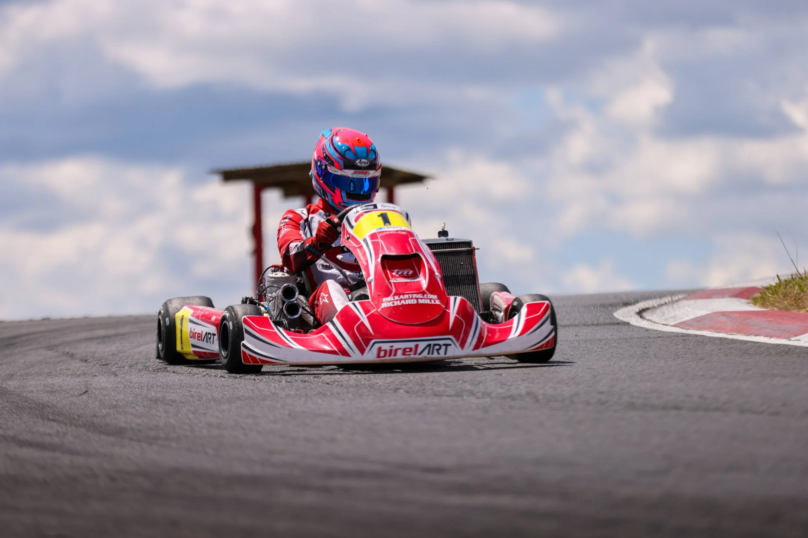
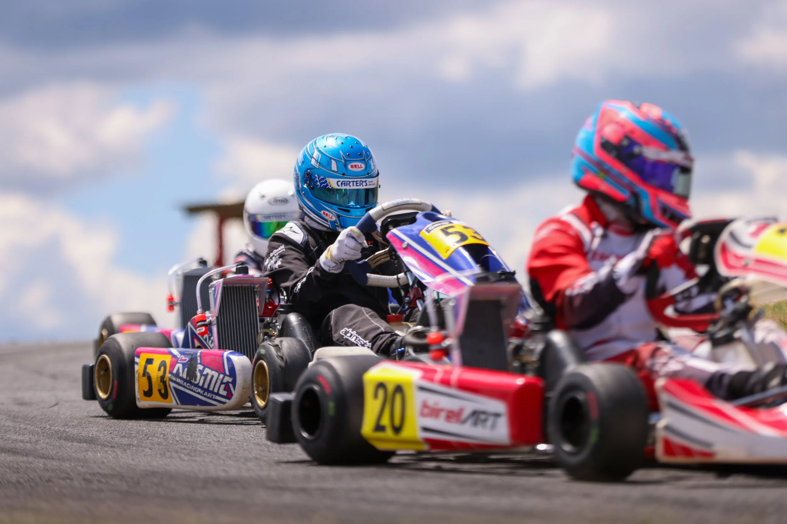

KartSport Tokoroa · Karting New Zealand Affiliated Club
The Home of Karting in the South Waikato
Welcome to the Tokoroa Kart Club! We're the heart of karting in the South Waikato, offering a thrilling and welcoming environment for karters of all ages and skill levels. Whether you're a seasoned racer or looking to get started in the exhilarating world of motorsport, you'll find a passionate community, a fantastic track, and plenty of opportunities to ignite your competitive spirit here.
Join Us
Experience the Thrill of Karting
Join us and experience the thrill of karting! Our facility is available to members seven days a week for practice, so whether you're chasing lap times after school or on a Sunday morning, there's always track time on offer.
From first-time drivers to seasoned club champions, KartSport Tokoroa is a supportive, family-friendly community built around a genuine passion for motorsport.
See Membership Options
Get Involved
Everything You Need to Get On Track
Membership
Racing, Family and Social memberships available, plus a home for bucket bike & Kayo bike riders.
View membership options →Race Days
Regular club championships and points series on our 765m circuit — see upcoming dates and entry forms.
See race days →Practice
Members can book practice sessions online, seven days a week, and get track access via a PIN.
Practice info →
New to Karting?
Your Journey Starts Here
New to the sport? Our Getting Started guide walks you through everything — from your first visit to a race day, joining the club, getting your Karting New Zealand licence, sourcing gear and a kart, and getting out on track.
Start HereReady to Join the Grid?
Becoming a member is easy. Head to our Membership Portal to sign up today — we can't wait to welcome you to the Tokoroa Kart Club family.
Go to Membership Portal